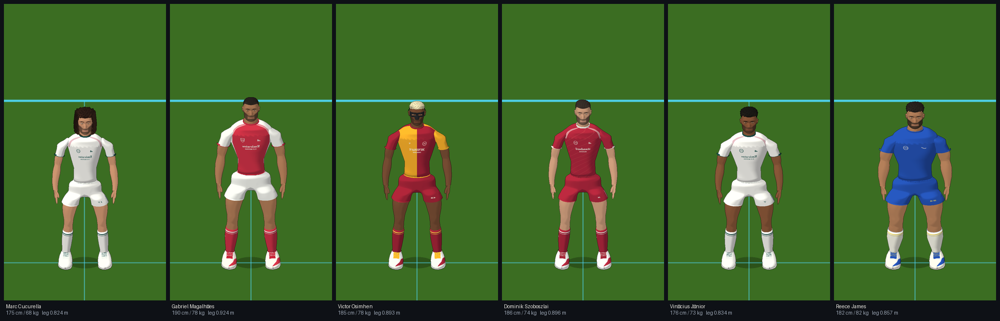
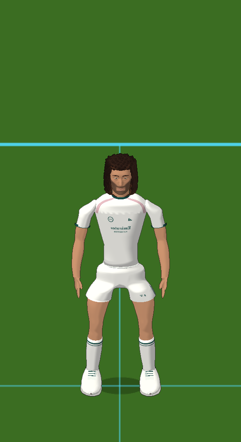
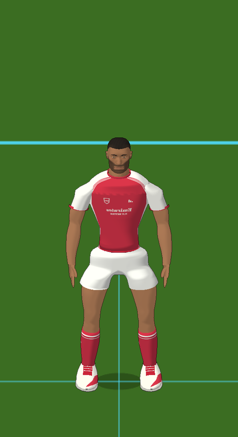
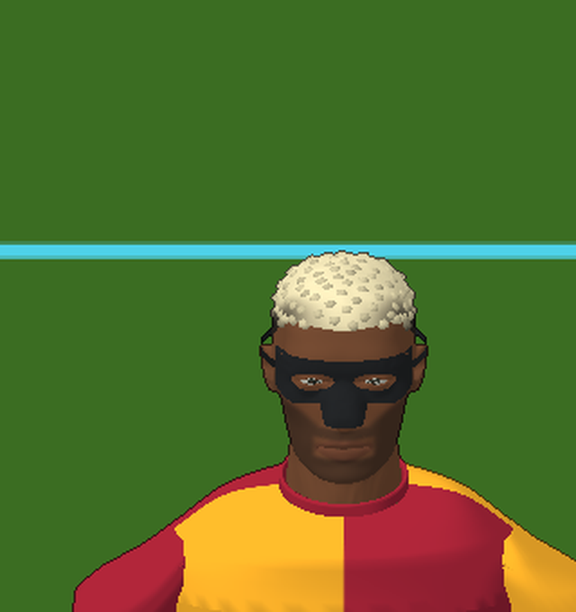
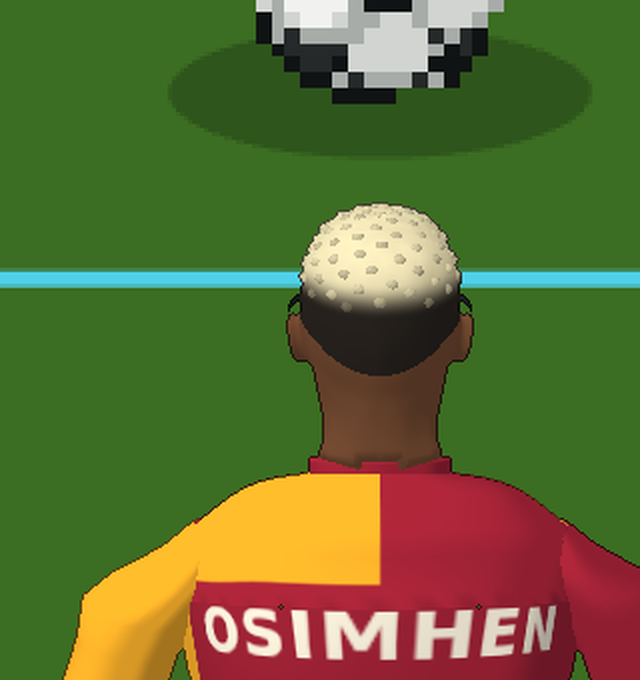
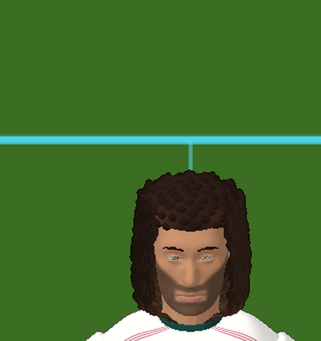
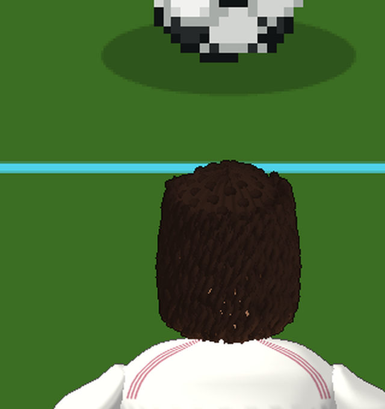
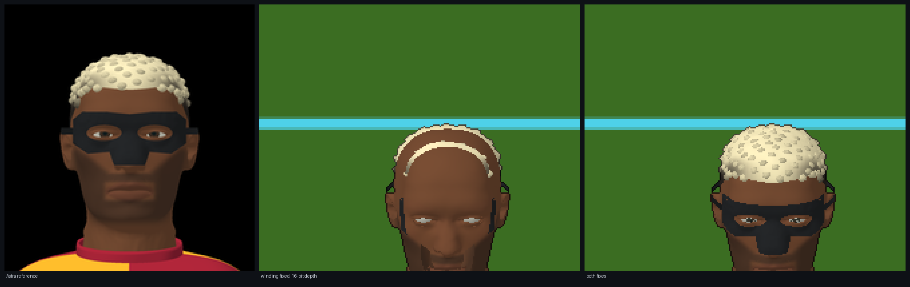
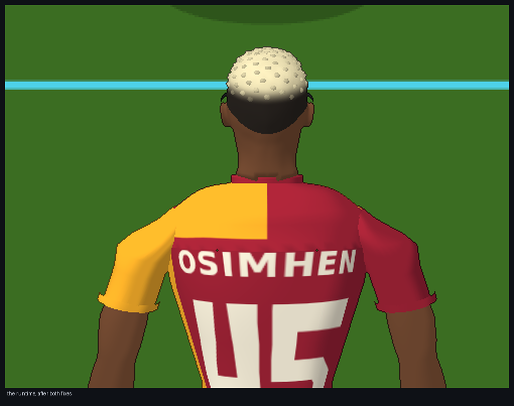

Six real players on the outfield skeletal runtime that already owned locomotion, Dribbling V1 and Shooting V1.

CharactersC next player · Shift+C previous · cycles
Cucurella → Gabriel → Osimhen → Szoboszlai → Vinícius → James → generic test body
MoveWASD or arrows · Q walk · E jog · Shift sprint
BallJ ball at your feet · L loose ball 4 m ahead · K dribble markers
Shoothold to charge, release to strike — 1 inside/curl · 2 normal · 3 power · 4 chip · 5 trivela · F preferred foot
SquadN cycles 0 → 10 → 21 extra players; with a character selected the squad is made of real characters
ViewX Mixed · G follow · V markers · H HUD · 6 generic proportions
PlaytestR reset · M pause · , slow motion · . step
Morphology is presentation by default. Add &charSim=1 to the URL to let the selected player's real leg
length drive the simulation's own stride clock instead — a deliberate, visible opt-in, and not the accepted configuration. The HUD
says which mode is active.
Cucurella and Gabriel were integrated first and deliberately: 175 cm / 68 kg against 190 cm / 78 kg, with the longest hair in the roster on the shorter man. If a shared runtime can carry both without a per-player animation library, it can carry the rest.
| Marc Cucurella | Gabriel Magalhães | difference | |
|---|---|---|---|
| stature | 175 cm | 190 cm | 15 cm |
| mass | 68 kg | 78 kg | 10 kg |
| modelled height | 1.7500 m | 1.9000 m | 0.1500 m |
| hip height | 0.9123 m | 1.0123 m | 0.1000 m |
| leg chain (hip→knee→ankle) | 0.8243 m | 0.9243 m | 0.1000 m |
| ankle above ground | 0.0880 m | 0.0880 m | 0.0000 m |
| drawable geometry | 102,288 v / 173,932 t | 57,828 v / 97,772 t | — |
| hair | long curls, neck + chest influences | close crop, head only | — |


The rule that decides whether this integration is right or wrong: the neutral presentation stance is not the bind pose, and a
shared template's inverse binds do not describe any real player. Both traps are checked, per player, by a static gate that refuses to pass
on assertion rather than on inspection. The gate reconstructs each player's bind from his own offsets
(origin[j] = origin[parent] + offsetLocal[j], inverseBind[j] = T(−origin[j])), then proves the reconstruction
closes and that an identity pose reproduces the bind mesh.
| player | stated cm | modelled H (m) | hip (m) | leg chain (m) | bind closes | inverseBind = T(−origin) | identity pose = bind mesh | template error, joints | template error, leg chain |
|---|---|---|---|---|---|---|---|---|---|
| Marc Cucurella | 175 | 1.7500 | 0.9123 | 0.8243 | 107 nm | 58 nm | 212 nm | 6.36 cm | 1.93 cm |
| Gabriel Magalhães | 190 | 1.9000 | 1.0123 | 0.9243 | 48 nm | 41 nm | 147 nm | 7.56 cm | 5.03 cm |
| Victor Osimhen | 185 | 1.8500 | 0.9807 | 0.8927 | 96 nm | 52 nm | 156 nm | 6.98 cm | 4.17 cm |
| Dominik Szoboszlai | 186 | 1.8600 | 0.9836 | 0.8956 | 57 nm | 57 nm | 60 nm | 7.02 cm | 4.00 cm |
| Vinícius Júnior | 176 | 1.7600 | 0.9216 | 0.8336 | 155 nm | 58 nm | 179 nm | 6.40 cm | 2.40 cm |
| Reece James | 182 | 1.8200 | 0.9455 | 0.8575 | 100 nm | 58 nm | 165 nm | 6.67 cm | 2.03 cm |
The last two columns are the template trap made numeric: a generic rig scaled to the same stature places that player's joint origins up to 7.6 cm away, and his leg chain up to 5.0 cm away. Inheriting template binds would have put every plant, every touch and every strike wrong by that much, on a body that still looked plausible standing still.
Not the sole, not the ankle, not the mesh bounding box. Each player's contact landmarks come from his own footwear geometry, and the runtime plants the boot on the stud tips it actually has.
| player | lowest stud tip (mm) | rubber sole bottom (mm) | ankle joint (mm) | toe joint (mm) |
|---|---|---|---|---|
| Marc Cucurella | -0.00 | 12.0 | 88.0 | 31.0 |
| Gabriel Magalhães | -0.00 | 12.0 | 88.0 | 31.0 |
| Victor Osimhen | -0.00 | 12.0 | 88.0 | 31.0 |
| Dominik Szoboszlai | -0.00 | 12.0 | 88.0 | 31.0 |
| Vinícius Júnior | -0.00 | 12.0 | 88.0 | 31.0 |
| Reece James | -0.00 | 12.0 | 88.0 | 31.0 |
Every stud tip sits at y = 0 to within a rounding zero. The 12 mm sole and the 88 mm ankle are consequences of the boot, not assumptions about it.
Idle, walk, jog, run and sprint holds; the walk→jog→run ramp; walk and jog stops; the full sprint stop; gradual and sharp turns; a standing turn; and a slow walk. Seventy-eight runs. The measure that matters is slide while the foot is planted: a boot that is on the ground must stay where it was put.
| player | H (m) | leg (m) | phase jumps | NaN | IDLE | WALK | JOG | RUN | SPRINT |
|---|---|---|---|---|---|---|---|---|---|
| Marc Cucurella | 1.75 | 0.824 | 0 | no | 2.2 / 0.7 / 0.1 | 0.6 / 0.4 / 0.0 | 0.0 / 0.0 / 0.0 | 0.1 / 0.0 / 0.0 | 0.0 / 0.0 / 0.0 |
| Gabriel Magalhães | 1.90 | 0.924 | 0 | no | 2.1 / 0.5 / 0.1 | 2.5 / 0.0 / 0.0 | 0.0 / 0.0 / 0.0 | 0.0 / 0.0 / 0.0 | 0.0 / 0.0 / 0.0 |
| Victor Osimhen | 1.85 | 0.893 | 0 | no | 2.1 / 0.6 / 0.1 | 0.4 / 0.2 / 0.0 | 0.4 / 0.4 / 0.0 | 0.1 / 0.0 / 0.0 | 0.0 / 0.0 / 0.0 |
| Dominik Szoboszlai | 1.86 | 0.896 | 0 | no | 2.1 / 0.6 / 0.1 | 1.1 / 0.4 / 0.1 | 0.6 / 0.6 / 0.0 | 0.0 / 0.0 / 0.0 | 0.0 / 0.0 / 0.0 |
| Vinícius Júnior | 1.76 | 0.834 | 0 | no | 2.3 / 1.4 / 0.2 | 1.3 / 0.9 / 0.1 | 0.0 / 0.0 / 0.0 | 0.1 / 0.0 / 0.0 | 0.0 / 0.0 / 0.0 |
| Reece James | 1.82 | 0.857 | 0 | no | 2.5 / 0.6 / 0.1 | 0.6 / 0.3 / 0.0 | 0.0 / 0.0 / 0.0 | 0.0 / 0.0 / 0.0 | 0.0 / 0.0 / 0.0 |
Planted-foot slide, worst scenario per gait: max / p95 / mean in cm. Running gaits are 0.0 cm across the board on all six. The 2 cm maxima are all standing-pivot and sharp-turn frames, where the foot is deliberately repositioning. Zero phase jumps and no NaN in any of the 78 runs.
CONTROLLED_DRIBBLING_V1 is untouched: the simulation still decides when a touch is authorised, with which foot and with
what impulse. What is measured here is whether that authorised touch happens at a boot that is actually on the ball — the distance from the
striking boot's surface to the ball's surface, on the tick the simulation fired.
| player | walk 1.5 m/s | jog 3.0 m/s | run 5.0 m/s | 90° turn at run | run → settle |
|---|---|---|---|---|---|
| Marc Cucurella | 6/7 3.5 / 10.2 | 16/16 5.3 / 7.3 | 14/15 3.0 / 10.6 | 12/15 7.8 / 38.1 | 7/8 3.4 / 10.6 |
| Gabriel Magalhães | 7/7 3.8 / 9.3 | 15/16 8.7 / 10.6 | 15/15 4.3 / 8.6 | 12/15 9.1 / 36.2 | 8/8 4.6 / 8.6 |
| Victor Osimhen | 7/7 3.6 / 9.5 | 16/16 7.5 / 9.3 | 15/15 3.7 / 9.1 | 12/15 8.5 / 36.9 | 8/8 4.0 / 9.1 |
| Dominik Szoboszlai | 7/7 3.5 / 9.4 | 16/16 7.5 / 9.3 | 15/15 3.6 / 8.9 | 13/15 8.4 / 37.0 | 8/8 3.9 / 8.9 |
| Vinícius Júnior | 6/7 3.8 / 10.3 | 16/16 6.0 / 7.4 | 14/15 3.5 / 10.6 | 11/15 8.2 / 37.6 | 7/8 3.9 / 10.6 |
| Reece James | 6/7 4.5 / 10.7 | 16/16 7.8 / 9.3 | 14/15 4.9 / 10.8 | 11/15 9.3 / 36.1 | 7/8 5.1 / 10.8 |
Each cell: touches realised within 10 cm / touches measured, then mean / max boot-to-ball in cm. Across all six players and all five cases: 337/366 touches realised, median 4.2 cm, mean 5.9 cm, p95 10.7 cm. The turn column is the weak one on every body including the generic reference (13/15, max 35.0 cm there) — it is the known corrective-touch behaviour of Dribbling V1 during a hard direction change, not a real-body regression.
A 19.2 cm mean was reported for Cucurella's walk dribble and held back acceptance. It reproduces exactly — and only under
charSim=1, the opt-in in which the selected player's real leg length is published to the simulation's own stride clock. That is
not the accepted configuration. In the shipped, simulation-neutral configuration the same run measures 3.5 cm mean.
| Cucurella, walk | touches | touch spacing | mean | max |
|---|---|---|---|---|
| shipped: morphology is presentation | 7 | 28 ticks | 3.5 cm | 10.2 cm |
charSim=1: morphology drives the stride clock | 7 | 27 ticks | 19.2 cm | 36.6 cm |
The decisive experiment removes the character entirely. On the generic test body — same mesh, same presentation, no character
loaded — only p.legLen is forced onto the player law:
| forced leg length (m) | touches | spacing (ticks) | mean (cm) | max (cm) |
|---|---|---|---|---|
| 0.800 | 8 | 25.9 | 6.4 | 12.4 |
| 0.824 | 7 | 26.7 | 8.6 | 19.7 |
| 0.865 = PT.LEG_REF | 7 | 28.0 | 2.8 | 4.6 |
| 0.900 | 7 | 28.8 | 8.3 | 13.7 |
| 0.924 | 7 | 29.0 | 8.4 | 21.0 |
The degradation is symmetric about the reference leg: 0.800 and 0.824 are no worse than 0.900 and 0.924, and only 0.865
— PT.LEG_REF itself — is clean. So this is the carry law's tuning being commensurate with the stride clock at one leg length,
not a defect of short stature and certainly not a defect of a particular player.
The obvious generic fix is to make the carry standoff body-relative rather than absolute — scale it by
legLen / PT.LEG_REF, which is exactly 1.0 on the reference body and therefore cannot disturb the accepted Dribbling V1
behaviour by construction. It was implemented in match.js and measured across the whole sweep:
| leg length (m) | absolute standoff (accepted) mean/max cm | proportion-aware standoff mean/max cm | change in mean (cm) |
|---|---|---|---|
| 0.800 | 6.4 / 12.4 | 7.7 / 12.4 | +1.3 |
| 0.824 | 8.6 / 19.7 | 9.0 / 19.8 | +0.4 |
| 0.865 | 2.8 / 4.6 | 2.8 / 4.6 | +0.0 |
| 0.900 | 8.3 / 13.7 | 8.1 / 14.0 | -0.2 |
| 0.924 | 8.4 / 21.0 | 7.7 / 20.8 | -0.6 |
It changes nothing: bit-identical at the reference leg, as predicted, and within noise everywhere else. Not justified, so not
adopted — match.js carries no change from this investigation. The brief was to make a generic proportion-aware correction
if justified; the honest answer is that this one is not, and a simulation constant should not be moved to flatter a diagnostic mode
that the shipped configuration never enters.
Shooting V1 is untouched. ptKick still fixes the family, the striking foot, the charge and — from the recovered sprite
library's own frame counts — the authoritative instant of contact; the presentation time-warps its authored action onto that instant. What is
measured is the striking boot's surface to the ball's surface on the simulation's own contact tick.
| shot | technique | launch family | nominal | striking surface |
|---|---|---|---|---|
| 1 inside / curl | INSIDE | SHORT | 14 m | medial face |
| 2 normal | LACES | DRIVEN | 20 m | instep |
| 3 power | LACES_POWER | CLEAR | 35 m | instep |
| 4 chip | CHIP | LOFT | 22 m | under-toe |
| 5 trivela | OUTSIDE | SHORT | 14 m | lateral face |
| player | inside / curl | normal | power | chip | trivela | mean |
|---|---|---|---|---|---|---|
| generic test body (Shooting V1 baseline) | 1.5 | 3.2 | 3.3 | 1.2 | 1.5 | 2.1 |
| Marc Cucurella | 20.2 | 9.2 | 5.6 | 7.7 | 17.8 | 12.1 |
| Gabriel Magalhães | 21.1 | 9.2 | 6.9 | 8.6 | 20.4 | 13.2 |
| Victor Osimhen | 20.7 | 9.0 | 6.3 | 8.2 | 19.4 | 12.7 |
| Dominik Szoboszlai | 20.5 | 8.8 | 6.2 | 8.1 | 19.3 | 12.6 |
| Vinícius Júnior | 20.6 | 9.5 | 6.1 | 8.2 | 18.4 | 12.6 |
| Reece James | 22.0 | 10.6 | 7.6 | 9.5 | 20.2 | 14.0 |
Boot surface to ball surface at the authoritative contact tick, cm, right foot, approaching at a run. Every strike lands on the tick the simulation chose; the strike time is never moved.
| player | inside / curl | normal | power | chip | trivela | mean |
|---|---|---|---|---|---|---|
| Marc Cucurella | 20.2 | 9.2 | 6.9 | 7.7 | 17.8 | 12.3 |
| Gabriel Magalhães | 21.1 | 9.2 | 7.3 | 8.6 | 20.4 | 13.3 |
The simulation selected the left foot and the right plant in every case, and the residuals reproduce the right-foot figures to the millimetre on four of five families. The kick library's left mirror is exact.
fk = skelFK(skel, pose, rootM)) and then re-applies only locked legs. The striking leg is deliberately unlocked — it
swings — so its solved contact placement was thrown away, every tick the clamp ran.
A real body carries a standing ground lift of about 1.2 cm continuously, so the clamp ran on every tick of every strike. The generic test body's lift is zero at contact, which is why V1 validation never saw it. Direct evidence: the requested contact point is identical on both bodies (0.125 m from the ball centre, derived from the ball, not the body), and the distance from the toe tip to that point at contact was 0.0 cm on the generic body against 25.8 cm on Cucurella.
No contact target was re-authored. The authorisation to re-derive INSIDE and OUTSIDE geometry was not used: their targets, poses, rhythm, charge curves, launch families, torso and arm choreography and plant behaviour are all untouched, as are Normal, Power and Chip. The single change is that the reach is now a function, re-applied after each FK rebuild in the ground clamp, exactly as locked legs already were — four lines of structure, no new constants.
| body | inside | normal | power | chip | trivela |
|---|---|---|---|---|---|
| generic test body | 1.5 → 1.5 | 1.5 → 1.5 | 1.6 → 1.6 | 1.2 → 1.2 | 1.5 → 1.5 |
| Marc Cucurella | 20.2 → 1.4 | 9.2 → 1.5 | 5.2 → 1.6 | 7.7 → 2.6 | 17.8 → 1.5 |
| Gabriel Magalhães | 21.1 → 1.4 | 9.0 → 1.6 | 6.5 → 1.6 | 8.6 → 2.3 | 20.4 → 1.5 |
| Victor Osimhen | 20.7 → 1.4 | 8.9 → 1.5 | 5.9 → 1.6 | 8.2 → 2.4 | 19.4 → 1.5 |
| Dominik Szoboszlai | 20.5 → 1.4 | 8.7 → 1.5 | 5.8 → 1.6 | 8.1 → 2.4 | 19.3 → 1.5 |
| Vinícius Júnior | 20.6 → 1.4 | 9.5 → 1.5 | 5.7 → 1.6 | 8.2 → 2.6 | 18.4 → 1.5 |
| Reece James | 22.0 → 1.4 | 10.5 → 1.5 | 7.2 → 1.6 | 9.5 → 1.7 | 20.2 → 1.5 |
before: mean 11.1, median 8.9, p95 21.1, worst 22.0 cm · after: mean 1.6, median 1.5, p95 2.6, worst 2.6 cm (35 strikes)
| body | inside | normal | power | chip | trivela |
|---|---|---|---|---|---|
| generic test body | 21.4 → 1.5 | 1.5 → 1.5 | 1.5 → 1.5 | 9.0 → 3.1 | 1.5 → 1.6 |
| Marc Cucurella | 21.3 → 1.4 | 10.0 → 1.5 | 10.4 → 1.5 | 6.5 → 3.0 | 20.1 → 1.5 |
| Gabriel Magalhães | 21.9 → 1.5 | 10.8 → 1.5 | 11.8 → 1.5 | 7.3 → 3.3 | 22.6 → 1.5 |
| Victor Osimhen | 20.8 → 1.5 | 9.5 → 1.5 | 10.4 → 1.5 | 6.5 → 3.5 | 21.1 → 1.5 |
| Dominik Szoboszlai | 20.8 → 1.5 | 9.5 → 1.5 | 10.4 → 1.5 | 6.4 → 3.5 | 21.1 → 1.5 |
| Vinícius Júnior | 22.0 → 1.5 | 10.7 → 1.5 | 11.2 → 1.5 | 7.1 → 3.0 | 20.9 → 1.5 |
| Reece James | 22.9 → 1.6 | 11.4 → 1.5 | 12.0 → 1.5 | 8.3 → 3.5 | 22.2 → 1.5 |
before: mean 13.2, median 10.8, p95 22.6, worst 22.9 cm · after: mean 1.9, median 1.5, p95 3.5, worst 3.5 cm (35 strikes)
Boot surface to ball surface at the simulation's own contact tick, cm, approaching at a run. The generic body's right foot is bit-unchanged (1.5 / 1.5 / 1.6 / 1.2 / 1.5) — it was never affected. Its left foot was: inside 21.4 → 1.5 and chip 9.0 → 3.1. The defect was in the shared solver all along, and the reference body hid it only on the side V1 happened to measure.
| invariant | result across all 70 cells |
|---|---|
| technique, launch family, striking foot | identical |
authoritative contact tick and kickAt | identical |
| launch speed, launch vz, charge | identical |
| plant-foot mode, contact flag and slide | identical |
| ground lift at contact | identical (the body still lifts; the reach is simply no longer discarded) |
| gate | cases | result |
|---|---|---|
| Shooting, animation ON vs OFF (5 families × both feet × standing and running) | 20 | max |delta| = 0 |
| Character simulation neutrality (generic, six characters, animation off, and both) | 14 | max |delta| = 0 |
| Dribbling V1, animation ON vs OFF | 8 | max |delta| = 0 |
| Locomotion, nine bodies × thirteen scenarios | 117 | worst planted-foot slide identical to V1 on all six characters; 0 phase jumps; no NaN |
Dribbling presentation improved as a side effect of the same fix, with touch counts and feet unchanged: generic run 2.1 → 1.9 cm mean, Cucurella run 3.0 → 2.7 cm (worst 10.6 → 5.3, now 15/15 realised), Gabriel run 4.3 → 1.9 cm.
Astra's shipped derived/osimhen/attachments.json records the orbital-nasal protection as 1,837 triangles.
Constructing the same part here, from the same portable record through the package's own constructPortable, yields
1,830. The difference was characterised before it was dismissed.
| what was checked | result |
|---|---|
| scope of the difference | one part, one player, 7 triangles — every other part of every other player matches the manifest exactly |
| vertex set | 1,168 vertices in both — identical count |
| bind bounds | identical to 0.000e+0 m on all six axes |
| degenerate triangles | 0 |
| non-manifold edges | 0 |
| boundary loops | 4, all structural: outer silhouette (180 v), two mirrored eye apertures (64 v each, 4.8 × 2.2 cm), strap edge (202 v) — no pinhole |
| skin influences | head only — the visor is rigidly attached to one bone |
| departure from head-rigid motion | 0.00 cm in all nine test scenarios, including all five kick families |
reference/osimhen/head-0.png confirms it: the mask reads correctly at every
angle. This does not block integration.Documented, not reconciled. The build now counts rig.json's part table from the geometry it actually
packs, so the table always sums to the mesh it ships, and records the package's declared figure alongside as
packageDeclared with the reason. The same mechanism flags a second, unrelated case on every player —
lower_anatomy's vertex count — which is this build's own material-seam vertex duplication and is labelled as such.
Astra's manifest is derived, not canonical; it is quoted, not edited.


Neither the hair nor the face protection has physics here: both are skinned. So the only honest questions are questions about skinning, asked against the poses the libraries actually produce — sprint, a run→brake, a 180° reversal, a walk, and one of each of the five kick families. The approved weights are measured, never modified.
| player | part | vertices | joints it reads | max departure from head-rigid (cm) | peak travel per tick (cm) | scalp distance change (cm) |
|---|---|---|---|---|---|---|
| Marc Cucurella | hair | 58,615 | chest + head + neck | 3.72 | 18.4 | +0.62 / −0.69 |
| Gabriel Magalhães | hair | 14,155 | head | 0.00 | 22.2 | +0.00 / −0.00 |
| Victor Osimhen | hair | 27,655 | head | 0.00 | 22.3 | +0.00 / −0.00 |
| Victor Osimhen | face-protection | 1,168 | head | 0.00 | 22.3 | +0.00 / −0.00 |
| Dominik Szoboszlai | hair | 14,155 | head | 0.00 | 22.5 | +0.00 / −0.00 |
| Vinícius Júnior | hair | 27,655 | head | 0.00 | 21.4 | +0.00 / −0.00 |
| Reece James | hair | 27,655 | head | 0.00 | 21.5 | +0.00 / −0.00 |
Cucurella is the only player whose hair reads joints other than head — the package ships that as an explicit warning
(HAIR_HAS_NON_HEAD_INFLUENCES: neck + chest) and asks that the weights be preserved for baseline comparison rather than
reweighted to make integration easier. They were preserved, and measured instead:
Every other player's hair, and Osimhen's visor, read head alone and reproduce head-rigid motion to exactly 0 m in every
scenario. That is the attachment being proven, not asserted.


The architectural rule for this whole project is that the simulation decides what happens and the animation visually explains what happened. For real characters that has a sharp, testable meaning: choosing a player must not change a single authoritative number. The gate runs one identical 320-tick script — run onto a loose ball, carry it, turn, and strike a Power shot — on the generic body, on each of the six real players, with the skeletal layer switched off entirely, and with both at once. It compares, tick by tick: player x/y/vx/vy/facing, ball x/y/z/vx/vy/vz, the possession flag and state, the touch count and chosen foot, the stride phase, and the kick record itself (contact tick, launch speed, launch vz, technique, striking foot, charge).
| case | max |delta| | verdict |
|---|---|---|
| generic body (reference) | 0 | IDENTICAL |
| character: Marc Cucurella | 0 | IDENTICAL |
| character: Gabriel Magalhães | 0 | IDENTICAL |
| character: Victor Osimhen | 0 | IDENTICAL |
| character: Dominik Szoboszlai | 0 | IDENTICAL |
| character: Vinícius Júnior | 0 | IDENTICAL |
| character: Reece James | 0 | IDENTICAL |
| animation OFF | 0 | IDENTICAL |
| animation OFF + Marc Cucurella | 0 | IDENTICAL |
| animation OFF + Gabriel Magalhães | 0 | IDENTICAL |
| animation OFF + Victor Osimhen | 0 | IDENTICAL |
| animation OFF + Dominik Szoboszlai | 0 | IDENTICAL |
| animation OFF + Vinícius Júnior | 0 | IDENTICAL |
| animation OFF + Reece James | 0 | IDENTICAL |
Fourteen cases, zero divergence, zero page errors. tools/anim3d/of_char_regress.js.
Both were invisible on the generic test bodies and unmissable on a real player. Both are generic fixes to the shared renderer, and neither can touch the simulation — the neutrality gate above was re-run after each.
Astra's triangles are counter-clockwise seen from outside; this was verified against the shipped per-vertex normals (98.8% of Osimhen's
122,002 triangles have (v1−v0)×(v2−v0) along the outward normal) and independently by a geometric outwardness test, which agrees
for every part group. This engine's camera transform reverses winding in screen space, so its own meshes are drawn with
frontFace(CCW) — and under that convention Astra's front faces were the ones being culled. What survived was the inside of
the far side of the body: kit lettering read mirrored, and the shirt's back panel appeared on the chest. The character draw now sets
frontFace(CW) and restores the previous state. Back-face culling stays on.
Real characters are built from concentric shells. Osimhen's hair cap sits a measured 5.9 mm outside the scalp along the same ray,
and the visor about 4 mm off the brow. The character render target used a DEPTH_COMPONENT16 renderbuffer, which at pitch-camera
distances cannot separate millimetres — the cap and the scalp landed in the same depth bucket, so draw order decided and the scalp won. Only
the silhouette rims of the hair and the visor survived; a diagnostic that painted the hair magenta and the visor cyan showed exactly that.
Both render targets are now DEPTH_COMPONENT24. Same cost, one renderbuffer format, and the hair and the mask render as Astra's
own reference renders them.


A character is immutable shared data. Its geometry, its atlas and its GPU buffers are created once per player and reused by reference for every actor wearing him; an actor adds only its own 23-joint skinning palette. Two Cucurellas on the pitch cost one Cucurella's geometry plus 1,472 bytes.
| player | vertices | triangles | mesh.bin | rig.json | atlas.png | GPU vertex | GPU index | GPU texture | GPU total |
|---|---|---|---|---|---|---|---|---|---|
| Marc Cucurella | 102,288 | 173,932 | 8.04 | 27 KB | 17 KB | 5.85 | 1.99 | 1.00 | 8.84 |
| Gabriel Magalhães | 57,828 | 97,772 | 4.54 | 26 KB | 17 KB | 3.31 | 1.12 | 1.00 | 5.43 |
| Victor Osimhen | 72,497 | 122,002 | 5.68 | 27 KB | 14 KB | 4.15 | 1.40 | 1.00 | 6.54 |
| Dominik Szoboszlai | 57,828 | 97,772 | 4.54 | 27 KB | 27 KB | 3.31 | 1.12 | 1.00 | 5.43 |
| Vinícius Júnior | 71,328 | 120,172 | 5.59 | 27 KB | 15 KB | 4.08 | 1.38 | 1.00 | 6.46 |
| Reece James | 71,328 | 120,172 | 5.59 | 27 KB | 13 KB | 4.08 | 1.38 | 1.00 | 6.46 |
| all six | 33.99 | 39.16 |
Megabytes unless stated. CPU geometry resident with all six loaded: 33.99 MB. GPU buffers plus atlases: 39.16 MB. Astra's canonical inputs are far smaller than either — this is derived, regenerable data, and the build step can drop any player the match does not need.
The harness's own per-stage timers, stepping the real page at 60 Hz with a carried ball, the player being Cucurella and the squad built from real characters (N):
| rigs on the pitch | simulation | animation + IK | skinning | character render | composite | draws |
|---|---|---|---|---|---|---|
| 1 | 0.09 | 0.20 | 0.23 | 0.40 | 0.05 | 0.10 | 25.99 | 28.60 | 6.32 | 8.60 | 1 |
| 6 | 0.08 | 0.20 | 0.69 | 1.20 | 0.04 | 0.10 | 25.30 | 27.10 | 6.31 | 8.30 | 6 |
| 22 | 0.05 | 0.10 | 1.93 | 2.70 | 0.07 | 0.20 | 23.72 | 25.80 | 6.95 | 9.00 | 22 |
ms per frame, mean | p95, 300 ticks each. The CPU-side cost of the whole skeletal layer at 22 real characters is 2.05 ms (0.05 simulation + 1.93 animation and IK + 0.07 skinning) — animation and IK scale linearly at ≈ 0.088 ms per rig, and skinning barely moves because the GPU does it. The character render column does not grow from 1 draw to 22: it is the rasteriser's fill cost, and these runs are headless software GL (SwiftShader), so that column is a floor set by the test environment rather than a measurement of the characters. The ROI render target stayed grow-only at 3008 × 1920 with zero reallocation, and zero page errors.
| cost | |
|---|---|
| six distinct characters, CPU geometry | 33.99 MB |
| six distinct characters, GPU buffers + atlases | 39.16 MB |
| per actor on the pitch (23-joint skin palette) | 1,472 B |
| 22 actors drawn from those six | 33.99 MB CPU + 32 KB / 39.16 MB GPU |
| shared code — pose library, contact solve, shader | ≈ 98 KB of source, resident once, never per player |
A full 22-player match drawing from a six-character roster costs the six characters and nothing more per player: the marginal cost of the 7th through 22nd player is their skinning palettes and their draw calls. A 22-distinct-character match would scale the table above linearly, ≈ 125 MB CPU / 144 MB GPU at this geometry density, which is the number to argue with when the roster grows — not a number this integration commits to.
tools/anim3d/of_char_build.js — the build step. Emits mesh.bin / rig.json / atlas.png
per player from the canonical library plus his portable record. Its part table is now counted from the geometry it actually packs, with any
difference from the package's derived manifest recorded as packageDeclared and labelled with its cause.anim3d/of_character.js, anim3d/of_char_gl.js — the runtime loader and the GPU draw. Each player's bind is
reconstructed from his own offsets; the shading is a direct port of Astra's approved Mixed configuration.anim3d/of_char_gl.js — front-face winding set to CW for the character draw (bug 1 above).anim3d/gl_renderer.js — 24-bit depth on both character render targets (bug 2 above).anim3d/of_motion.js — the reach solve. The displacement cap is now a total, not a per-pass allowance, and the solve
iterates only while the target is reachable. This is the one behavioural change to the accepted stack, and it is presentation-only.anim3d/of_player.js — character selection, the identity/action HUD line, and a squad built from real characters.of_char_gate.js, of_char_regress.js, of_char_equip.js (new), and
--character / --charsim / --leglen on the probes.assets/characters/outfield/ is derived and regenerable; no derived debug mesh was promoted to canonical.match.js carries no change from this task. The proportion-aware standoff was built, measured and
rejected on the evidence.charSim=1 — the opt-in in which real morphology drives the stride clock is characterised above and is not the accepted
configuration. Making the carry law commensurate at any leg length is a simulation design decision, not a presentation fix, and is left
open deliberately.Artifacts: review_artifacts/outfield_characters/ — this page, the figures, and
data/summary.json, the machine-readable record behind every table here.
Tools: sandbox/visual/tools/anim3d/of_char_build.js, of_char_gate.js, of_char_regress.js,
of_char_equip.js, of_ball_probe.js, of_shot_probe.js, of_loco_validate.js.